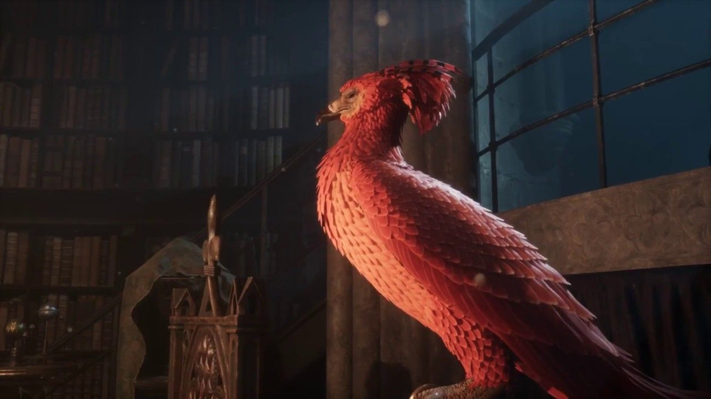
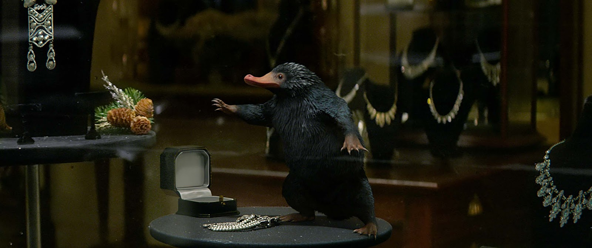
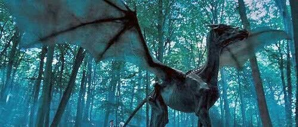
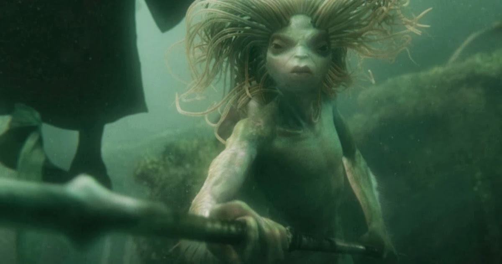
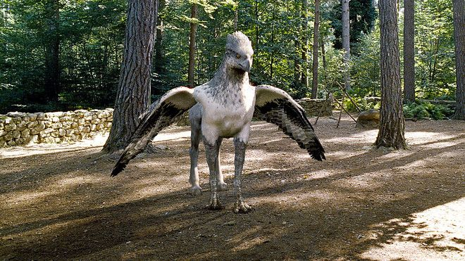

Animais Fantásticos
- 
- 
-

- 
- 
- 
Fênix
Esse belíssimo pássaro da mitologia grega também ganhou sua versão no universo Harry Potter. Apresentado em A Câmara Secreta, a fênix é um animal de cor vermelha e porte de cisne, com um longo rabo, bico e garras dourados.
A fênix tem uma vida longuíssima porque é capaz de se regenerar. Quando seu corpo entra em decadência ela simplesmente irrompe em chamas e ressurge jovem das cinzas.
Suas lágrimas tem poderes curativos, e há quem diga que seu canto é capaz de aumentar a coragem nos corações puros e atemorizar as pessoas já terríveis.
Na trama de Harry Potter, Dumbledore possui uma fênix de estimação, a Fawkes.
Pelúcio
Apresentado nos livros de Harry Potter, o pelúcio veio a ganhar uma versão cinematográfica apenas com o lançamento de Animais Fantásticos e Onde Habitam em 2016. Fofo, preto e de focinho longo, essa criatura tem predileção por tudo que brilha.
Embora ele seja um animal inofensivo, não é recomendado criar um pelúcio em casa devido a sua capacidade de destruir e bagunçar qualquer ambiente em busca de objetos brilhantes.
Ele pode ser encontrado em covas e podem ter de seis a oito filhotes em cada ninhada.
No filme estrelado por Eddie Redmayne, é um pelúcio o responsável por iniciar todo o caos que leva o bruxo Newt Scamander a se aventurar ao lado do não-maj Jacob e da auror Tina.
Passáro-trovão
A esse animal natural dos Estados Unidos - mais precisamente do estado do Arizona - é maior que qualquer homem adulto e pode causar verdadeiras tempestades durante o voo.
Uma das casas da Escola de Ilvermorny de Magia e Bruxaria é batizada com o nome de Thunderbird, nome original em inglês do pássaro.
É para devolvê-lo ao seu habitat natural que Newt vai aos Estados Unidos no primeiro filme de Animais Fantásticos.
O Pássaro-Trovão acaba sendo fundamental para espalhar o soro que apaga a memória dos trouxas ao final do filme.
Testrálio
Esses cavalos alados, negros e esqueléticos são invisíveis aos olhos daqueles que nunca realmente viram a morte de perto. Por causa disso, os testrálios tem uma reputação macabra, tendo sido caçados e maltratados ao longo de séculos.
Harry Potter não conseguiu ver um testrálio por anos, ainda que tenha presenciado o assassinato da mãe quando criança. Foi só quando ele viu Cedrico Diggory ser morto, que ele finalmente compreendeu a ideia de perda, passando assim a ver os testrálios que puxam as carruagens da estação de Hogsmead até Hogwarts.
Os testrálios são criaturas dóceis e gentis ao contrário do que sua aparência pode sugerir.
E foram eles que ajudaram Harry, Rony, Hermione, Luna, Neville e Gina a voarem até o Ministério da Magia em A Ordem da Fênix.
Sereianos
Os sereianos são como o que os trouxas conhecem como sereias, porém, a maioria deles estão longe de serem exemplos de beleza como diz o imaginário popular ligado a essas criaturas mitológicas.
Eles podem ser encontrados em qualquer parte do mundo e usam um idioma próprio para se comunicar.
Seus hábitos são tão misteriosos quanto os do centauros, mas seu amor amor pela música são algumas das características mais famosas e verídicas.
Em Harry Potter e o Cálice de Fogo, os sereianos são parte importante da Segunda Tarefa do Torneio do Tribruxo.
Hipogrifo
Em O Prisioneiro de Azkaban, Harry é apresentado a uma espécie realmente fantástica: o hipogrifo. A criatura que tem a cabeça de águia e o corpo de cavalo faz parte da mitologia popular, mas foi adotado com algumas características originais por J.K. Rowling.
Segundo o livro ficcional Animais Fantásticos e Onde Habitam escrito por Newt Scamander, um hipogrifo pode ser encontrado em qualquer parte do mundo, mas não deve ser domesticado por qualquer um.
Para evitar um ataque mortal desse animal, é preciso mostrar-lhe que você tem boas intenções fazendo uma reverência. Se o hipogrifo retribuir, é sinal de que você está seguro.
FAQ
- Quantos animais fantásticos existem?
- Ainda não se pode contabilizar a quantidade de anmimais existentes, visto que novas descobertas são realizadas com muita frequência.
- E o Basilisco?
- O Basilisco também é um animal fantástico que tem semelhanças com uma cobra gigante. O Basilisco é apelidado de O Rei das Cobras pelos bruxos. É uma rara, porém não única, criatura. Normalmente é criada por bruxos das trevas e se tornou uma das mais perigosas criaturas do mundo da magia..
- Os Testrálios trazem má sorte?
- Apesar da má reputação, Testrálios não trazem má sorte, eles são, na verdade, muito benevolentes..
- Quem é a Fênix de Albus Dumbledore?
- Fawkes é a Fênix de Albus Dumbledore. Ele é vermelho e dourado e tem mais ou menos o tamanho de um cisne. Fawkes foi a inspiração para o nome do grupo de resistência A Ordem da Fênix. Este animal também é conhecido por curar feridas pelo derramamento de lágrimas, bem como pela capacidade de carregar cargas que podem chegar a cem vezes o seu peso..
Contato

- erickggar@gmail.com
- +55 (21) 9999-9999
- Rua do Conde, nº 21
- Rio de Janeiro - RJ